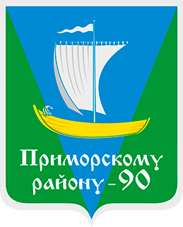

муниципальное образование
"ПРИМОРСКИЙ МУНИЦИПАЛЬНЫЙ РАЙОН"
Общие сведения
Историческая справка
Административно-территориальное устройство
Награды Приморского района
Символика района
Особо охраняемые территории Приморского района
Контакты
Органы МСУ
Собрание депутатов
Глава муниципального образования
Администрация
Контрольно-счетная палата
Реализация 8-ФЗ
136-ФЗ (Реформа органов местного самоуправления)
МО - сельские поселения
МО "Боброво - Лявленское"
МО "Заостровское"
МО "Катунинское"
МО "Лисестровское"
МО "Островное"
МО "Пертоминское"
МО "Приморское"
МО "Талажское"
МО "Уемское"
МО "Сельское поселение Соловецкое"
Отчеты глав МО-поселений
Документы
Нормативные правовые акты
Проекты административных регламентов
Порядок обжалования
Муниципальные программы
Административные регламенты
Общественное обсуждение
Общественные обсуждения в сфере рыболовства
Планы
Документы о сайте
Реализация 152-ФЗ
Обращения граждан
Интернет-приемная
Работа с обращениями граждан
График приема граждан
Прямые телефонные линии по работе с обращениями граждан
Отчет о работе с обращениями граждан
Задать вопрос
Вопрос - Ответ
Муниципальные услуги
РЕЕСТР МУНИЦИПАЛЬНЫХ УСЛУГ
РЕЕСТР ГОСУДАРСТВЕННЫХ УСЛУГ
Муниципальные бюджетные учреждения
Администрации МО-поселений
Методические материалы
Услуги через МФЦ
Услуги на сайте gosuslugi.ru